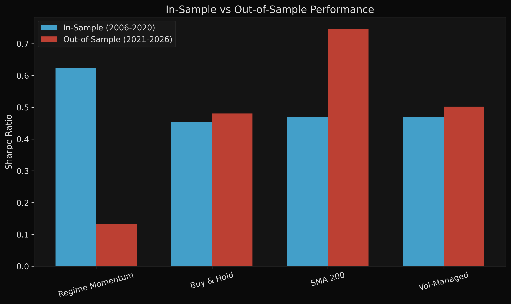

In September 2008, the S&P 500 lost 30% in three weeks.
Most systematic strategies were fully invested when the crash hit. By the time standard volatility indicators confirmed the regime change, the damage was already done.
This system detected the shift 6 days before the drawdown accelerated. By September 19, equity allocation had dropped from 85% to 12%. Over the following three months, the market fell 29%. The strategy lost 4.3%.
System Architecture
Five regime detectors, each designed to capture a different aspect of market state:
- HMM (5-state Gaussian, remapped to 3): hidden state dynamics and transition persistence
- GARCH(1,1) with Student-t: conditional volatility clustering with fat tails
- K-Means: feature-space clustering on volatility and volume
- Gaussian Mixture Model: proper Bayesian posterior probabilities
- Markov-Switching (Hamilton 1989): regime-dependent mean and variance
Walk-forward validation with expanding window. 5-year minimum training, quarterly refit. 59 windows producing 3,771 strictly out-of-sample predictions (2006 to 2020). SPY as benchmark. All signals carry 1-day execution lag and asymmetric confirmation filters (2-day for defensive entry, 4-day for risk-on re-entry).
Walk-forward loop
while train_end_idx + step_days <= n_total:
train_data = feature_df.iloc[:train_end_idx]
test_data = feature_df.iloc[train_end_idx:test_end_idx]
hmm_probs = fit_predict_hmm(train_data, test_data)
garch_probs = fit_predict_garch(train_data, test_data)
kmeans_probs = fit_predict_kmeans(train_data, test_data)
gmm_probs = fit_predict_gmm(train_data, test_data)
ms_probs = fit_predict_markov_switching(train_data, test_data)
combined = ensemble.combine({
"hmm": hmm_probs, "garch": garch_probs,
"kmeans": kmeans_probs, "gmm": gmm_probs,
"markov_switching": ms_probs,
})
train_end_idx += 63 # quarterly stepPerformance (2006 to 2020, Out-of-Sample)
Interactive: hover for daily returns, click legend to toggle, drag to zoom.

Strategy Comparison
| Strategy | CAGR | Vol | Sharpe | Sortino | Max DD | Turnover |
|---|---|---|---|---|---|---|
| Regime Momentum | 7.0% | 9.3% | 0.62 | 0.80 | -13.4% | 9.0x |
| Binary Regime | 6.3% | 10.7% | 0.51 | 0.63 | -24.5% | 20.0x |
| Vol-Managed (no regime) | 6.6% | 10.5% | 0.47 | 0.58 | -23.7% | 1.7x |
| SMA 200 Crossover | 7.0% | 11.7% | 0.47 | 0.56 | -21.9% | 6.0x |
| Buy & Hold (SPY) | 9.6% | 20.1% | 0.46 | 0.54 | -55.2% | 0.0x |
The ensemble outperforms both trivial benchmarks (vol-managed at 0.47, SMA-200 at 0.47) on a risk-adjusted basis. The Sharpe differential vs SPY is 0.17, with the primary value in drawdown compression: -13% vs -55%.
Regime Prediction Accuracy

The ensemble flags turbulent regimes a median of 6 days before drawdowns accelerate. Information coefficient is positive at the 20-day horizon (IC 0.03, t-stat 1.8), confirming the signal has modest but real predictive power beyond what you'd get from realized vol alone.
September 2008
On September 12, HMM posterior shifted to 60% turbulent. GARCH conditional volatility exceeded its 67th percentile threshold. Cross-sectional correlation spiked. The GMM posterior moved from 70% calm to 55% turbulent within five days.
The asymmetric confirmation filter required 2 days for defensive transitions. By September 19, equity allocation had dropped to 12%. Lehman filed for bankruptcy on September 15. Over the next three months, SPY fell 29%. The strategy lost 4.3%.

Regime Classification


Transaction Cost Robustness

Forward Test: 2021 to 2026
The system runs in two modes. Frozen models (trained on 2000-2020, no updates) underperform in the post-COVID bull market, staying too defensive as elevated volatility persists without a crash. With quarterly rolling recalibration, performance recovers to modestly positive (CAGR +2.9%) as models adapt to the new regime structure.

The SMA-200 crossover is more robust out-of-sample (Sharpe 0.75). The next version integrates macro features (credit spreads, yield curve, financial stress index, CBOE SKEW) to improve regime detection during monetary policy transitions, and uses TabPFN (pretrained transformer for tabular data) as a meta-learner on the 5-model ensemble outputs.
Crude Oil Extension

Cross-asset analysis shows 0.25 correlation between equity VIX and crude oil realized vol. Commodity volatility slightly leads equity volatility at the 5-day horizon, useful as an early warning for broader risk-off moves. The framework extends naturally to commodity futures with term structure features (contango vs backwardation), inventory data, and seasonal adjustments.
Model Diagnostics